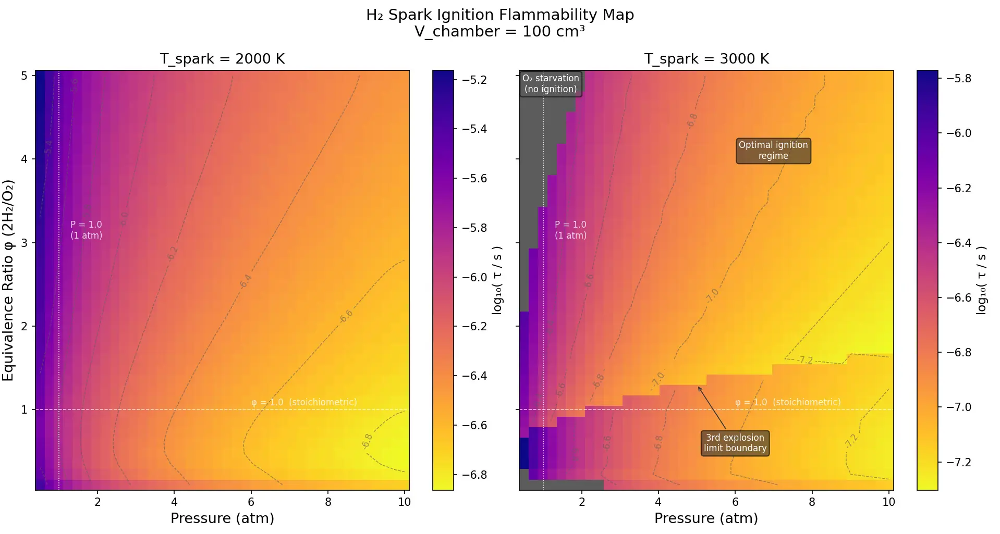
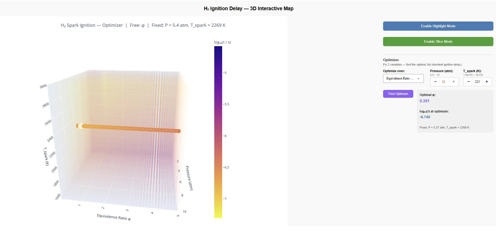
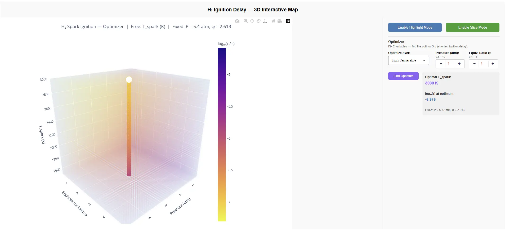

All projectsSheet 11 · Combustion · 2025
Hydrogen–oxygen ignition, from first principles
I wanted to understand what combustion software does under the hood, so I wrote the chemistry core myself. The result is a constant-volume kinetics simulator for hydrogen and oxygen, and 3D maps of where and how fast a spark-ignited mixture lights.
Elementary reactions in the published mechanism, with Troe falloff.
MechanismDifferential-equation evaluations behind the 3D flammability map.
ComputedLines of Python, written from scratch.
CodeSimulation runtime for the full parameter sweep.
Runtime01 — Why build it
The overall reaction looks simple. It isn’t.
I chose hydrogen because its overall reaction, 2H2 + O2 → 2H2O, looked straightforward. The accepted kinetics are anything but. About nineteen elementary reactions compete. Free radicals (H, O, OH, HO2) are created, multiplied and destroyed by rival pathways, each pulled toward its own thermodynamic equilibrium. Ignition is the moment the radical-multiplying steps outrun the ones that remove radicals.
02 — The mechanism
Radicals multiplying, radicals removed
Each turn of the chain-branching cycle turns one H atom into three radicals. Competing with it, a three-body step parks H as the far less reactive HO2. Which one wins depends on temperature and pressure. That competition is why ignition is so sensitive to initial conditions.
Scroll →
All 19 elementary reactionsby role
| No. | Reaction | Note |
|---|---|---|
| Chain branching & propagation | ||
| 1 | H + O₂ ⇌ O + OH | branching; dominant at high T |
| 2 | O + H₂ ⇌ H + OH | branching |
| 3 | H₂ + OH ⇌ H₂O + H | propagation, main heat release |
| 4 | O + H₂O ⇌ OH + OH | |
| Dissociation / recombination | ||
| 5 | H₂ + M ⇌ H + H + M | third body |
| 6 | O + O + M ⇌ O₂ + M | third body |
| 7 | O + H + M ⇌ OH + M | third body |
| 8 | H + OH + M ⇌ H₂O + M | third body |
| HO₂ formation & consumption | ||
| 9 | H + O₂ (+M) ⇌ HO₂ (+M) | Troe falloff |
| 10 | HO₂ + H ⇌ H₂ + O₂ | |
| 11 | HO₂ + H ⇌ OH + OH | |
| 12 | HO₂ + O ⇌ O₂ + OH | |
| 13 | HO₂ + OH ⇌ H₂O + O₂ | |
| H₂O₂ formation & consumption | ||
| 14 | HO₂ + HO₂ ⇌ H₂O₂ + O₂ | |
| 15 | H₂O₂ (+M) ⇌ OH + OH (+M) | Troe falloff |
| 16 | H₂O₂ + H ⇌ H₂O + OH | |
| 17 | H₂O₂ + H ⇌ HO₂ + H₂ | |
| 18 | H₂O₂ + O ⇌ OH + HO₂ | |
| 19 | H₂O₂ + OH ⇌ HO₂ + H₂O | |
The standard 19-reaction H₂/O₂ set used by published mechanisms of this size. Rate parameters come from the published mechanism.
03 — The model
Species, temperature and a stiff solver
Radical chemistry runs on timescales many orders of magnitude apart, so explicit integrators either fail or crawl. Every species concentration and the temperature are solved together as one stiff system.
- Formulation
- Constant volume (Vchamber = 100 cm³ in the maps) · zero-dimensional, homogeneous
- Unknowns
- Coupled ODEs for every species concentration and for temperature, linked through reaction rates and an energy balance
- Kinetics
- 19-reaction elementary mechanism · pressure-dependent rates with Troe falloff
- Thermodynamics
- NASA polynomials for temperature-dependent heat capacities and enthalpies
- Integration
- SciPy
solve_ivpwith the BDF method - Mixture
- Hydrogen and oxygen only
- Scale
- 2,000+ lines of Python · ~8 h for the full sweep
04 — Results
Watching ignition happen
One run at a time, radicals build through an induction period before heat release takes over. Across thousands of runs, a map emerges of where a spark-ignited mixture lights and how fast.


The 3D map
64,000+ evaluations in one volume
Axes: spark temperature, equivalence ratio and pressure. Color: log10 of ignition delay. A highlight mode isolates one delay band so its surface can be followed through the volume. A built-in optimizer fixes two variables and finds the third that gives the shortest delay.


05 — Limits
What a zero-dimensional model can’t tell you
There is no transport: no heat or mass diffusion, no flame propagation, no flame-stability conditions. Those need partial differential equations, which is the jump from this to real CFD, and the ODE case alone took 2,000+ lines and about eight hours of runtime. The mixture is hydrogen and oxygen only. Real chambers add other gases acting as third bodies, catalysts such as platinum that open new pathways, and additives such as NH3 that change hydrogen’s behavior.
The model has not been validated against an engine or against experimental ignition data. What it gives me is a working understanding of hydrogen kinetics: why ignition is so sensitive to initial conditions, and how competing radical pathways decide whether a mixture burns.
A dry-cell electrolyzer for oxyhydrogen
I’m designing a miniature dry-cell electrolysis system to produce oxyhydrogen for a small motorcycle engine. So far:
- Initial CAD designDone
- Component selectionDone
- Several components purchasedDone
- System integrationEarly stage
- Assembly and testingNot started
Once it runs, the simulator becomes a tool for the questions it raises: operating conditions, valve timing and, subject to laboratory approval, catalyst materials.